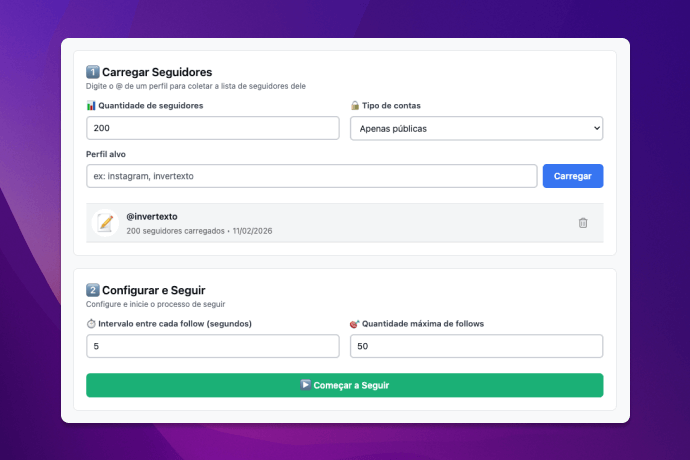

Como seguir automaticamente no Instagram e ganhar seguidores
Extensão para Chrome que permite seguir pessoas em massa de forma automatizada e segura.

Quer aumentar sua rede de seguidores no Instagram de forma estratégica? Seguir manualmente centenas de perfis relacionados ao seu nicho pode ser extremamente demorado e cansativo.
A forma mais prática e eficiente de fazer isso é usando a extensão Seguir Automático para o navegador Chrome.
Importante: Esta extensão funciona apenas em computadores (Windows, Mac ou Linux). Não há suporte para celulares ou tablets.
Por que seguir pessoas automaticamente?
- Economia de tempo: Seguir manualmente dezenas ou centenas de perfis pode levar horas;
- Expandir sua rede de contatos de forma direcionada ao seu nicho;
- Aumentar a visibilidade do seu perfil ou marca;
- Estratégia de crescimento orgânico para perfis comerciais;
- Conectar-se com seguidores de influenciadores ou concorrentes do seu mercado;
- Automatizar tarefas repetitivas e focar em criar conteúdo de qualidade.
Como funciona a extensão Seguir Automático
A Seguir Automático para Instagram é uma extensão para navegador que permite seguir automaticamente os seguidores de qualquer perfil público ou de perfis privados que você já segue.
A extensão opera diretamente na sua sessão do Instagram no navegador, sem necessidade de fornecer senha ou dados de acesso. Você mantém total controle do processo e pode interrompê-lo a qualquer momento.
Principais recursos:
- Carregar seguidores de qualquer perfil público ou privado que você já segue;
- Filtrar contas por tipo: públicas, privadas ou ambas;
- Configurar o intervalo de tempo entre cada follow para maior segurança;
- Processo automatizado com comportamento gradual e natural;
- Interface simples e intuitiva;
- Funciona diretamente no navegador, sem aplicativos externos.
Versão gratuita: Você pode testar a extensão gratuitamente com até 5 follows para conhecer o funcionamento antes de adquirir a licença completa.
Passo a passo para usar
- Instale a extensão Seguir Automático para Instagram clicando aqui.
- Abra o Instagram pelo navegador Google Chrome no computador e faça login na sua conta.
- Clique no ícone da extensão na barra de ferramentas do navegador.
- Digite o perfil desejado e clique em "Carregar" para importar a lista de seguidores.
- Inicie o processo automático e acompanhe o progresso em tempo real.
Dica: Você pode pausar ou interromper o processo a qualquer momento. É recomendável não ultrapassar 200 follows por dia para evitar restrições do Instagram.
Segurança e boas práticas
A extensão foi desenvolvida com foco em segurança e responsabilidade no uso:
- Sem acesso a credenciais: A extensão trabalha na sua sessão ativa do Instagram, não requer nem armazena sua senha;
- Teste antes de comprar: Use os 5 follows gratuitos para avaliar se a ferramenta atende suas necessidades;
- Controle total: Você define os limites e pode pausar ou parar o processo quando quiser;
- Intervalos configuráveis: O delay entre follows ajuda a simular comportamento humano e reduz riscos;
- Limite diário recomendado: Até 200 follows por dia para proteger sua conta de restrições;
- Use com moderação: Respeite os limites da plataforma e evite comportamento considerado spam.
Importante: Esta extensão não é afiliada, patrocinada ou endossada pelo Instagram. Use por sua conta e risco.
Estratégias para crescimento no Instagram
Para obter melhores resultados ao seguir pessoas automaticamente, considere estas estratégias:
- Escolha perfis relevantes: Siga seguidores de influenciadores do seu nicho para conectar-se com pessoas realmente interessadas no seu conteúdo;
- Combine com conteúdo de qualidade: Automatizar follows não substitui a necessidade de criar posts atrativos;
- Seja consistente: Siga uma rotina diária, mas sempre dentro dos limites seguros;
- Interaja genuinamente: Após seguir, interaja com os perfis que seguirem você de volta;
- Faça unfollows periódicos: Mantenha uma proporção saudável entre seguidores e seguindo.
Limitações e cuidados
Embora a extensão seja uma ferramenta poderosa, é importante estar ciente de algumas limitações e cuidados:
- Funciona apenas em computadores, não em dispositivos móveis;
- Para carregar seguidores de perfis privados, você precisa estar seguindo essas contas;
- Durante o processamento, é necessário que a aba do navegador permaneça aberta e ativa;
- O Instagram possui limites de ações diárias que, se ultrapassados, podem resultar em bloqueios temporários;
Alternativas para crescer no Instagram
Além da automação, existem outras estratégias para aumentar seus seguidores:
- Crescimento orgânico: Postar conteúdo de qualidade regularmente e usar hashtags relevantes;
- Engajamento manual: Comentar e interagir genuinamente com perfis do seu nicho;
- Parcerias e colaborações: Trabalhar com outros criadores de conteúdo;
- Anúncios pagos: Investir em Instagram Ads para alcance direcionado.
A extensão Seguir Automático é mais eficaz quando combinada com essas outras estratégias de crescimento.
Conclusão
Seguir pessoas automaticamente no Instagram pode ser uma estratégia eficiente para expandir sua rede de contatos e aumentar sua visibilidade, desde que feito com responsabilidade e moderação. A extensão Seguir Automático para Instagram oferece uma solução prática e segura para automatizar esse processo.
Lembre-se sempre de usar a ferramenta com bom senso, respeitar os limites da plataforma e combinar a automação com criação de conteúdo de qualidade e interações genuínas para obter os melhores resultados.